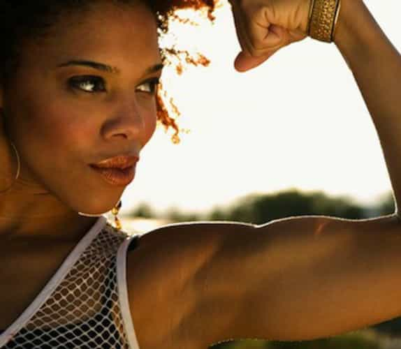
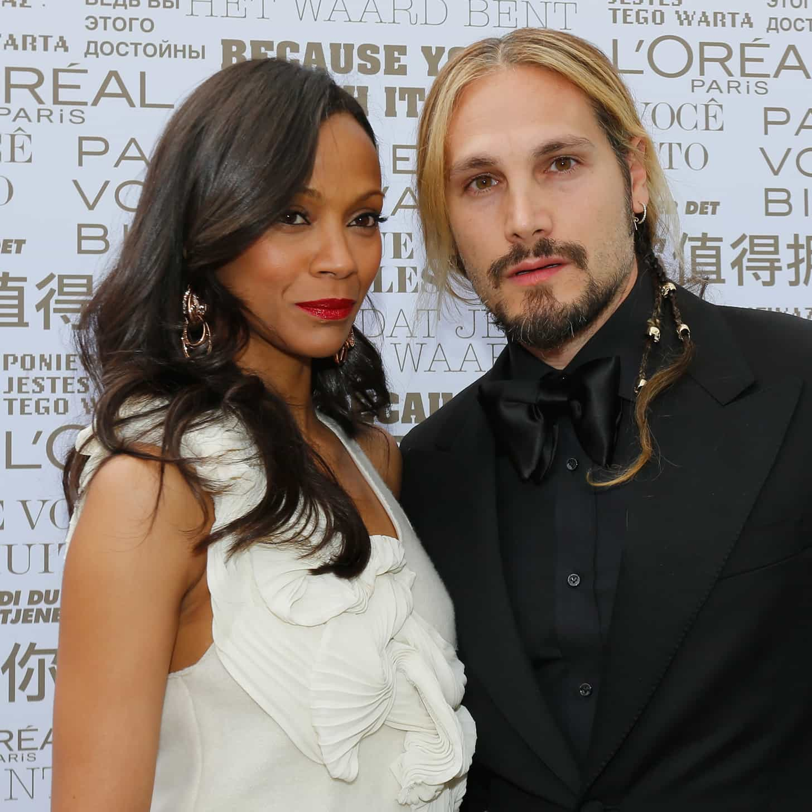
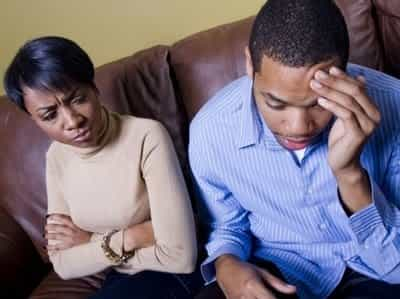
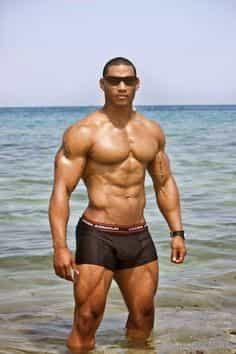
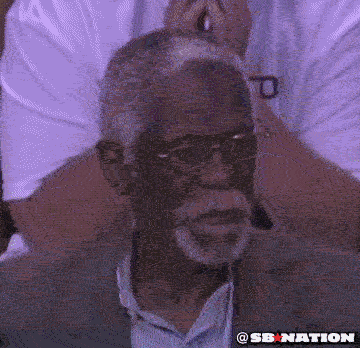
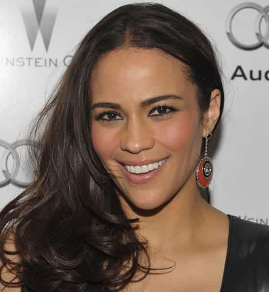

< < < Back
5 More Reasons I No Longer Date Black Women – Return Of Kings
When I wrote the prequel to this column a little over a year ago I predictably received my share of “fan mail” from angry sistas and their army of sexless simps. I was called a sellout, race traitor, and every other typical insult they could think of.
Being the ball busting bastard I am, I’ve decided to add another installment. This one will be a little different in that I’ll address some of the ringing endorsements I received from the so-called “black community” at large for my blasphemy.
5. They are not submissive
This one is a sub-category of their lack of femininity I touched on in the first article. The bottom line here is that they refuse to cater to their men (or maybe they just don’t know how) and get extremely huffy when there’s a hint of authority in your voice when giving them instructions.
A quick example: In my fledgling stages of implementing red pill game, I was on my way to pick up this chick I’d been seeing for a couple weeks. I called her up and said “Get dressed, I’m on my way.”
She responded by saying “Tch….you ain’t got to tell me like that. I’ll get dressed when I want to.” I was a little surprised at her response (remember, I was still a tadpole level player) but the more of them I dated the more of a pattern this seemed to become.

‘Strong black women’ don’t respond well to authoritative men
For whatever reason black women take exception to being told what to do. It’s as though it triggers an involuntary rebellious response that tells them to push back regardless of the circumstances. According to a couple of my buddies, this is one of the leading reasons fights start with them in the first place.
4. They “value” black men because we’re their only option

Coming to the realization she’ll attract very few men outside her race
Men with options aren’t about to be some woman’s backup plan. Black women are always complaining about black men on something or another. Among the most popular is “Black men don’t value us like we value them.”
Hypergamy knows no color or race. If white men, the men highest on the totem pole in terms of SMV, were to show more interest in black women, sisters would jump ship in a New York minute. All women aim to consolidate on the highest value male they can find, skin tone be damned.
Athlone McGinnis did a piece a while back on why black women love the TV show Scandal. The show’s main character, Olivia Pope, is a black woman who is a crisis management expert, specifically in the field of politics. She begins a torrid affair with the President, who is white, despite the fact that a high value black man, Edison Davis, is all but throwing himself at her.

Red pill aware black men don’t hate on stuff like this. We understand the game.
This comes as no surprise to the unplugged as we have a good working knowledge of a woman’s imperative. The truth is, if the President of that show were black and Edison white, Olivia would still be fucking the President. Women are attracted to the highest status males they have access to, regardless of race, and Pope is no exception.
Professional athletes like DeMarco Murray, Robert Griffin III, and Tiger Woods catch heat from black women for marrying or dating white women (or a woman who isn’t black). But where’s all their anger and outrage over celebrities like Stacey Dash, Halle Berry, or Zoe Saldana for marrying outside their race?

Where’s all the outrage?
It doesn’t exist because they understand that snagging the highest value male is part of the game. Unfortunately they don’t seem to want to acknowledge the pendulum swings both ways. At this point it’s safe to say that as far as black females are concerned, black men are a static “Plan B.”
3. They don’t give head
Ahhh, the elephant in the room. It’s common knowledge that when it comes to the task of a woman getting on her knees, black girls seem to be allergic to fellatio. Even in my beta days when I was fucking them left and right, I can only remember a few of them giving me head and that’s probably an overstatement.
Women know giving up the booty is easy. But a blowjob is the most submissive thing a she can do for a man. Being a “strong and independent black woman” doesn’t allow her relinquish that power to a man.
I’m fairly certain that if word got out that they’ve started following in the footsteps of their Hispanic, Asian, Indian, and :::gasp::: Caucasian sisters and started using their mouths to pleasure men, they’d probably start getting more attention for this reason alone.
Don’t get me wrong—I’m sure there are men out there who don’t mind not getting head from their women. But I’m not one of them, nor will I ever be.
2. They don’t know their place
Thanks to ridiculous television shows and Tyler Perry movies, black women seem to think they, not their men or husbands, should be the head of household. They honestly believe they should handle all the finances and make all the important decisions. If challenged, they retaliate with a loud rebuttal that is nothing short of condescending.

No need to wonder where his headache is coming from
A good friend of mine back east is a retired cop (I mentioned him around the mid point of this article) whose best friend and lifelong partner on the force is black. There was never a shortage of stories he’d tell us about his friend’s wife getting all up in arms when Harrison, his partner, made even the smallest purchase without her consent.
Obviously Harrison had neither the game, nor the respect to quell his wife’s behavior. But no matter how much game a man has, it’s a constant uphill battle dealing with a woman who believes it is her birthright to be in charge. Men with options simply aren’t going to deal with women who are bossy bitches. Period.
1. Their expectations are WAY too high

This dude better be rich or he’s gettin’ no play
The movie Something New coined a new acronym that quickly permeated the mindset of black females everywhere: I.B.M. or Ideal Black Man.
Basically, an “IBM” is tall, great looking, makes six figures, drives a luxury vehicle, lives in a penthouse in the city, and has washboard abs to boot. To be fair, most Western females have these expectations, but black women act more entitled to this mythical man than any other race.
It amazes me how women who act mannish, don’t know their roles as women, and don’t suck dick are the most outraged they don’t have dozens of Morris Chestnuts beating down their doors.
“Fan Mail”
I’m pretty sure there are a few black women reading this who are snarling at their screens right as well as a few black men pretending to be outraged (brothers, stop lying to yourselves….this is all true and you know it), just like there were after I posted the first installment.
To get your creative juices going and continue the “debate” (because surely attraction can be negotiated right?) I’ve decided to address the typical mud slinging that happens with columns like these:
“You hate yourself!”
Typical projection play. Black women hate themselves because they’re not preferred by the vast majority of men (and who can blame them) so they use the straw man “self hate” argument to deflect their pain.
They simply want to make themselves feel better about to fact that the men who used to want to fuck them are finding greener pastures with other breeds of female by telling us we ‘hate’ ourselves. Any man getting regular sex from females who aren’t masculine a live for going down on him is far from hating himself. I speak from personal experience.
“You can’t handle a strong black woman!”
Putting up with a bossy, mannish woman who wakes up with an attitude problem is something I don’t tolerate with any woman. You want to show me strength? Embrace true femininity, and then channel it. I’ll manhandle you all you want.
“How can you bad mouth black women when you were raised by one?”
Easy. As a man I have the ability to separate the truth from emotional and familial ties. Just because my mother is black doesn’t oblige me to ignore their flaws, worship or wife them up.
“The white girls regular black guys date are always fat and ugly!”
Yeah… keep telling yourselves that.
“Well as a black woman I would NEVER be with a man like you!”
Yes you would and you know it. But don’t worry, your secret’s safe with me.
“You’re a disgrace to the black community! Race traitor! Sellout!”

No matter what black women say, or how many “educated” sisters write great sounding rebuttals to this article, or how many exceptions to the rule they point out, they cannot deny that in 2016 most black men would rather date women who aren’t black. They see and hear proof of this unshakable truth each and every day and it burns them up that it’s staring them right in the face. I can’t say I blame ’em for being pissed off about it.
Conclusion
This isn’t a preference of race or skin tone. It’s a preference for fit, beautiful, feminine women. Make no mistake about the fact that I’d beat the brakes off both Megan Good or Kerry Washington (the actress who plays Olivia Pope) if my status were high enough to bag either one of them, but I wouldn’t bang Amy Schumer or Melissa McCarthy. See how that works?

Paula Patton can get some too
If black women would stop watching Tyler Perry movies, reading Steve Harvey books, and feeling sorry for themselves for being born at a disadvantage in terms of male preference and actually do something about it, they’d be a lot happier.
As a black man, I know I’m not going to have as many opportunities as white guys but I didn’t sit around and cry about it. I hit the gym, learned game, and stacked my paper. That has proven to be a better option than bitching and whining about what girls should be attracted to. Sisters would do well to do the same, but I’m not holding my breath.
Read More: 5 Reasons Why I No Longer Date Black Women